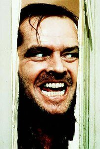

The Shining, Still (Jack Nicholson)
Stanley Kubrick · 1980 · Film, colour (frame)
In copyright. Look and learn: shown for study, not for download.
The door Jack Nicholson breaks through with the axe was real. Stanley Kubrick first shot the scene with a fake door, but Nicholson, who had served as a volunteer fire marshal and as a firefighter in the California Air National Guard, tore through it too quickly. His line is taken from Ed McMahon's introduction to The Tonight Show Starring Johnny Carson. Shooting ran from May 1978 to April 1979, mainly on sets at EMI Elstree Studios in England.